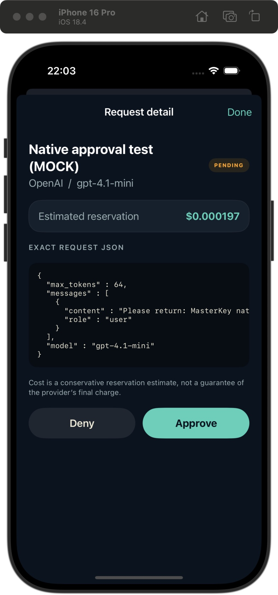

User-approved AI requests
Your key.
Your call.
Let people bring their own model API key and decide what an app can spend. You keep your product flow. They keep the final say.
Your users connect their own OpenAI or Anthropic key.
APP REQUEST
Paperplane
Assistant
wants to use your OpenAI key
“Summarize these meeting notes and list the next steps…”
View full request ↗A different way to pay for AI
Your app brings the request.
The user brings the key.
MasterKey sits between your app and a model provider. The user connects their own key, sees what the app wants to send, and approves the request on their phone. Your server gets a grant token, never their provider key.
before the key is used
If the current grant allows it, the request goes through. Otherwise it waits for approval.
A browser-only simulation
See the moment
before the call.
This demo is illustrative. No request is sent, no key is used, and nothing is saved.
Paperplane Assistant
requests access to your OpenAI key
{
"model": "gpt-4.1-mini",
"messages": [
{"role": "system", "content": "You are a concise assistant."},
{"role": "user", "content": "Summarize these meeting notes and list the next steps: ..."}
],
"max_tokens": 300
}The $0.004 figure is fictional and only illustrates where an estimate would appear.
From a running native build
A real app.
A visible request.
This is the SwiftUI app talking to the local Rust server. Pairing, exact payload inspection, approval, and the returned response have been tested together using a mock provider.
iPhone 16 Pro simulator, iOS 18.4. Test prompt and fake key. No real provider credits.
Run the native app
A familiar request shape
Point the call at MasterKey.
Keep building.
The OpenAI SDK can point at the v1 route. The Anthropic example uses the current route and Bearer auth directly. A grant token stands in for the provider key. These examples show the immediate-response path.
# Your app receives this grant after the user connects.
from openai import OpenAI
import os
client = OpenAI(
base_url="https://YOUR-MASTERKEY-SERVER/v1/openai",
api_key=os.environ["MASTERKEY_GRANT_TOKEN"],
max_retries=0,
)
reply = client.chat.completions.create(
model="gpt-4.1-mini",
messages=[{"role": "user", "content": "Hello!"}],
max_tokens=120,
)# Standard-library HTTP example for the current v1 route and Bearer auth.
import json
import os
from urllib.request import Request, urlopen
request = Request(
"https://YOUR-MASTERKEY-SERVER/v1/anthropic/messages",
data=json.dumps({
"model": "MODEL_FROM_SERVER_ALLOWLIST",
"max_tokens": 120,
"messages": [{"role": "user", "content": "Hello!"}],
}).encode(),
headers={
"Authorization": f"Bearer {os.environ['MASTERKEY_GRANT_TOKEN']}",
"Content-Type": "application/json",
},
method="POST",
)
with urlopen(request) as response:
result = json.load(response)When approval is needed, allow for a pause. MasterKey can hold the call briefly. If it returns 202 pending, your app needs to poll GET /v1/requests/{id} and handle the completed response. Streaming is not supported in v1.
Trust, stated plainly
The key stays with
the user's account.
MasterKey is designed so an app developer does not receive the user's provider key. The service stores it encrypted, then uses it to forward an approved request. The person or organization running that service is part of the trust boundary.
Read the source and decide for yourselfIt authorizes requests under the user's policy. It is not their provider key.
The server operator can decrypt stored keys to forward approved calls. Self-hosting lets you choose who operates it.
Requests and grants are designed to be visible in the user's app.
MasterKey / open source